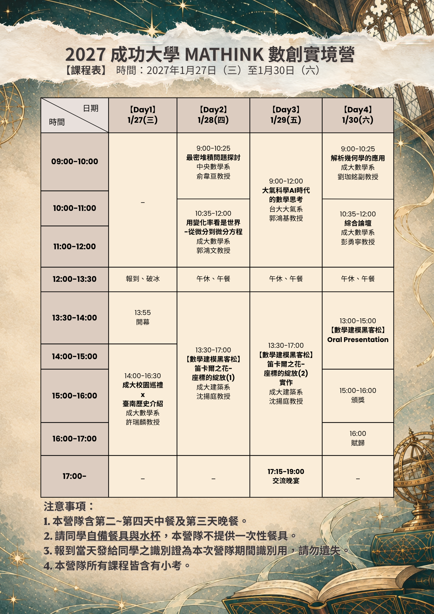

住宿
可自行安排，或在報名表勾選校園住宿（NT$1,500，含第 2 至第 4 天早餐）。
要住校園宿舍，請在 2026 年 12 月 15 日前完成報名與匯款。
床位依完成順序安排，不保證一定有床位；沒排到會立即通知，並在報到時退還住宿費（不含手續費）。宿舍只有床板，請自備睡袋、盥洗用具、吹風機與拖鞋。
當數學遇上科技、科學與人文，會激盪出什麼樣的火花？四天的課程、成大校園走讀與數學建模黑客松，帶你用數學看懂真實世界。
把數學和其他領域結合，用數學建模解決現實世界的問題。
紮實的數學與跨領域課程，和夥伴一起腦力激盪。
走訪校園景點，認識成大與臺南的歷史。
交流晚宴上自由聊天、交換名片，認識來自各地的同學。
每堂課後都有小考。數學建模黑客松 4 到 6 人一組，橫跨後三天，最後一天上台發表。

查看完整課程表原尺寸圖片，另開新分頁個人總成績由每堂課後小考、黑客松作品，以及營隊活動表現與老師、隊輔評分加總。全體前 40% 都能拿到獎金。
另外還有票選的最佳人氣獎，以及黑客松團體競賽的最佳創意獎、團體合作獎。
| 獎項 | 排名 | 每人獎金 |
|---|---|---|
| 壹等獎 | 前 4% | NT$4,000 |
| 貳等獎 | 前 5–8% | NT$3,000 |
| 叁等獎 | 前 9–20% | NT$1,000 |
| 佳作 | 前 21–40% | NT$500 |
完成報名表與繳費才算報名成功。若額滿，依完成繳費的先後順序錄取。
申請校園住宿另加 NT$1,500。報名費已含營期旅行平安險。
填寫報名表報名與繳費截止：2027 年 1 月 10 日（日）23:59
可自行安排，或在報名表勾選校園住宿（NT$1,500，含第 2 至第 4 天早餐）。
要住校園宿舍，請在 2026 年 12 月 15 日前完成報名與匯款。
床位依完成順序安排，不保證一定有床位；沒排到會立即通知，並在報到時退還住宿費（不含手續費）。宿舍只有床板，請自備睡袋、盥洗用具、吹風機與拖鞋。
送出表單後會提供匯款資訊，可轉帳或郵局無摺存款，繳費後請填寫繳費資料回傳表單。
團報請指定一位聯絡人統一繳費。超過 4 人時，同隊 4 人填 4 人團報選項，其餘依人數填 1–3 人表單，再由聯絡人來信告知是同一團隊。4 人團報會盡量安排同一隊，3 人以下由營隊協助分組。
低收入戶減免 80%，中低收入戶減免 60%。請先全額繳費，營隊結束後一個月內陸續退還。第一天報到時請繳交當年度公所證明正本，並全程參與、未違規提前退營。
薛小姐，建議直接寄信聯繫。
ircm@ncku.edu.tw
06-275-7575 分機 65105
營隊含第 2–4 天午餐及第 3 天晚餐，請自備餐具與水杯，營隊不提供一次性餐具。報到時發放的識別證請妥善保管。營期間的攝影紀錄僅用於成果報告、活動紀錄與非商業宣傳。
主辦：國立成功大學數學系系學會。協辦：成大數學跨領域研究中心、成大通識教育中心、成大數學系、成大理學院、成大文教基金會、國科會自然處科學推展中心數學組、中華民國數學會。
名額 100 人，額滿依繳費順序錄取。
填寫報名表